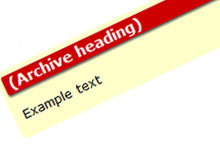
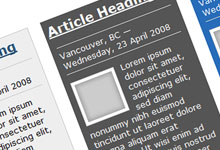

CSS: Modules
Table of contents
Module CSS overview
Modules are specific CSS classes that work within the grid system and create an entire presentation style. By using one module class, you can easily create a full page or just a small section of stylized content. The CSS is written to style every detail of the grid cell for a specific use and purpose. All background colours, borders and other features appear automatically.
Before using these modules, we recommend that you have an understanding of grid CSS.
It is easy to code a module. The following is an example:
<div class="grid(number) module(name)">
(content)
</div>Module options
Right menu modules
Related links module
The module-related class features a list of links that point to related Web pages. For full details of when to use this module and how to code it, refer to: Right menu: Related links CSS module — module-related 
Versatile module
The module-versatile class allows for any type of content in a right menu. For full details of when to use this module and how to code it, refer to: Right menu: Versatile menu CSS module — module-versatile 
Billboard module
The module-billboard class features a list of links to specialty and newsworthy pages. For full details of when to use this module and how to code it, refer to: Right menu: Billboard CSS module — module-billboard 
Event module
An events menu must include a link to the main events page and can optionally include a calendar. This type of menu uses the class module-event. For full details of when to use this module and how to code it, refer to: Right menu: Event menu CSS module — module-event 
Content modules
Table of contents module
Use the module-table-contents class for creating a table of contents. For full details of when to use this module and how to code it, refer to: Table of contents CSS module — module-table-contents 
Welcome page module
The module-welcomepage class is for Welcome pages and features a list of links. For full details of when to use this module and how to code it, refer to: Welcome page menu CSS module — module-welcomepage 
Menu section module
The module-menu-section class styles a supplementary menu that follows the user throughout a section of the site. For full details of when to use this module and how to code it, refer to: Menu section CSS module — module-menu-section
Poster module
The module-poster class features an image and corresponding caption. For full details of when to use this module and how to code it, refer to: Poster CSS module — module-poster 
Alert module
Use the module-alert class to alert the user to important information that is temporary for example, systems that are down, error messages, pending changes to X . For full details of when to use this module and how to code it, refer to: Alert CSS module — module-alert 
Attention module
Use the module-attention class to call attention to a important information. For full details of when to use this module and how to code it, refer to: Attention CSS module — module-attention 
Note module
Use the module-note class to call attention to a feature-worthy information. For full details of when to use this module and how to code it, refer to: Note CSS module — module-note 
Info module
Use the module-info class to call attention to a feature-worthy information. For full details of when to use this module and how to code it, refer to: Info CSS module — module-info 
Question and answer module
The module-question and the module-answer classes allow you to create FAQs or feature one-time Q&As. For full details of when to use this module and how to code it, refer to: Question and answer CSS modules — module-question and module-answers page. 
Summary module
The module-summary class features content summaries, recaps and reviews. For full details of when to use this module and how to code it, refer to: Summary CSS module — module-summary
Contact module
The module-contact features basic contact information (use a regular table for complex information instead of this CSS module). For full details of when to use this module and how to code it, refer to : Contact CSS module — module-contact 
News and spotlight module
The module-news and module-spotlight classes are for news articles and stories. For full details of when to use this module and how to code it, refer to: News CSS modules — module-news and module-spotlight 
User comment module
The module-comment class styles the user's comments and responses. For full details of when to use this module and how to code it, refer to: User comments CSS module — module-comment
Form fluid module
The module-form-fluid class stretches form elements to the full width of the grid cell. For full details of when to use this module and how to code it, refer to: Form fluid CSS module — module-form-fluid 
Tool module
Use the module-tool class to call attention to a tool or similar solution/product that is featured on the page. For full details of when to use this module and how to code it, refer to: Tool CSS module — module-tool 
Refer module
Use the module-refer class to call attention to a the action of referring something. For full details of when to use this module and how to code it, refer to: Refer CSS module — module-refer
In-progress module
Use the module-inprogress class to call attention to content that is in-progress or being worked on. For full details of when to use this module and how to code it, refer to: In-progress CSS module — module-inprogress 
Archive module
Use the module-archive class to inform the user that the page contains archived information. For full details of when to use this module and how to code it, refer to: Archive CSS module — module-archive 
Highlight module
Use the module-highlight class to highlight or feature a small section of content. For full details of when to use this module and how to code it, refer to: Highlight CSS module — module-highlight and module-highlight-details 
- Date modified: